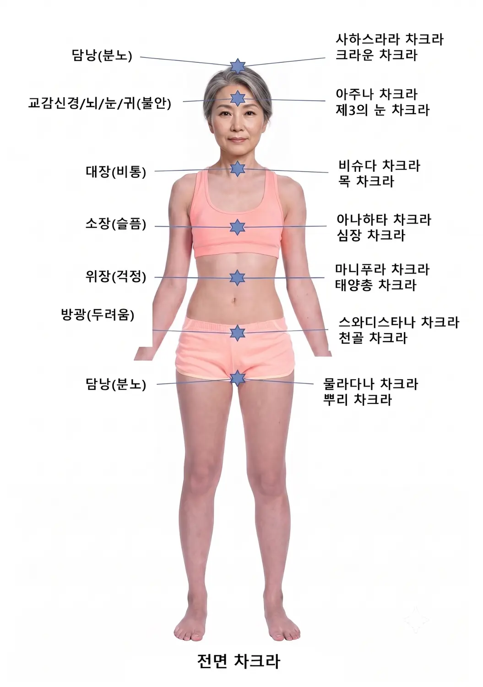
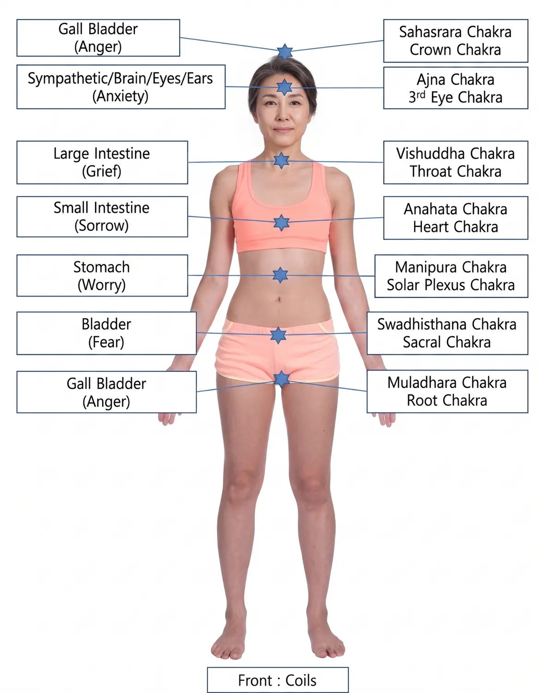
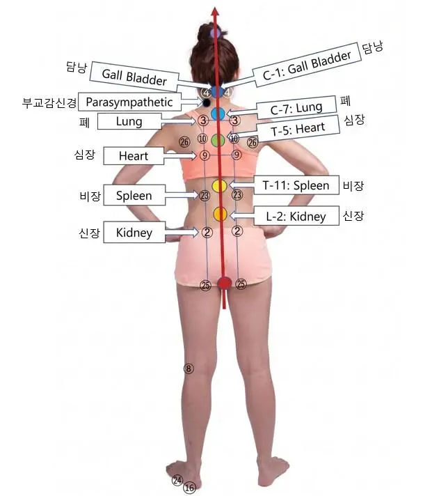

01 · BIO POINT NOVACELL REMEDY
Bio Point
바이오 포인트 노바셀 통치 요법
책에서는 차크라를 인체의 쁘라나(Prana, 생명 에너지)가 순환하는 특별한 중심으로 소개하고, 임맥(CV)과 독맥(GV)을 따라 여러 생체 회로가 교차하는 지점과 비교합니다. 노바셀 통치 요법에서는 차크라의 위치와 가깝지만 완전히 같지는 않은 전환점을 바이오 포인트라고 구분합니다.
중앙 케이블
책에서는 신체 전면의 임맥(CV)과 후면의 독맥(GV)을 전압 전달의 기본 케이블로 설명합니다.
중앙 바이오 포인트
두개골, 목, 가슴, 복부, 골반과 회음부 등 각 영역의 중앙 전환점을 설명합니다.
측면 바이오 포인트
신체 각 부위의 오른쪽과 왼쪽으로 전압을 제공하는 측면 지점을 별도로 설명합니다.
SEVEN CHAKRAS
7개 차크라와 바이오 포인트
물라다라 · Muladhara
뿌리·베이스·루트 차크라 / Root Chakra
골반 바닥과 미골 끝 부위에 해당하며 생존, 음식, 수면, 성적 본능과 두려움의 정서에 관한 설명이 수록되어 있습니다.
- 임맥 CV
- CV1
- 독맥 GV
- GV1
스와디스타나 · Swadhisthana
천골·골반 차크라 / Sacral Chakra
난소, 전립선, 생식기와 욕망에 관련된 중심으로 설명합니다.
- 임맥 CV
- CV3
- 독맥 GV
- GV4
마니푸라 · Manipura
태양총 차크라 / Solar Plexus Chakra
배꼽 부위, 소화기관, 내면의 힘과 목적에 관련된 에너지 중심으로 설명합니다.
- 임맥 CV
- CV12
- 독맥 GV
- GV6
아나하타 · Anahata
심장 차크라 / Heart Chakra
가슴 중앙에 위치하며 사랑, 믿음, 동정심과 여러 감정이 모이는 곳으로 설명합니다.
- 임맥 CV
- CV17
- 독맥 GV
- GV11
비슈다 · Vishuddha
목 차크라 / Throat Chakra
인후 부위에서 말하기, 듣기와 신진대사 조절에 관련된 중심으로 설명합니다.
- 임맥 CV
- CV22
- 독맥 GV
- GV14
아즈나 · Ajna
제3의 눈 차크라 / Third Eye Chakra
미간과 송과선에 관련되며 직감과 지혜의 중심으로 설명합니다.
- 임맥 CV
- 미간
- 독맥 GV
- GV16
사하스라라 · Sahasrara
크라운 차크라 / Crown Chakra
머리 위에 해당하며 깨달음으로 가는 관문으로 설명합니다.
- 임맥 CV
- GV20 바이오 터미널
- 독맥 GV
- GV20
BILINGUAL FIGURES
차크라·바이오 포인트 원본 도해 3장
원본 그림의 위치와 선을 바꾸지 않고 보존했습니다. 한글 전용 그림에는 영문 범례를, 영문 전용 그림에는 한글 범례를 같은 카드 안에 붙여 한 화면에서 대조할 수 있습니다.
전면 차크라 · 한글 원본

영문 보완 범례
- 담낭(분노)Gall Bladder (Anger)
- 교감신경·뇌·눈·귀(불안)Sympathetic · Brain · Eyes · Ears (Anxiety)
- 대장(비통)Large Intestine (Grief)
- 소장(슬픔)Small Intestine (Sorrow)
- 위장(걱정)Stomach (Worry)
- 방광(두려움)Bladder (Fear)
차크라 이름
- 사하스라라 · 크라운Sahasrara · Crown Chakra
- 아즈나 · 제3의 눈Ajna · Third Eye Chakra
- 비슈다 · 목Vishuddha · Throat Chakra
- 아나하타 · 심장Anahata · Heart Chakra
- 마니푸라 · 태양총Manipura · Solar Plexus Chakra
- 스와디스타나 · 천골Swadhisthana · Sacral Chakra
- 물라다라 · 뿌리Muladhara · Root Chakra
전면 차크라 · 영문 원본

한글 보완 범례
- Gall Bladder (Anger)담낭(분노)
- Sympathetic · Brain · Eyes · Ears교감신경·뇌·눈·귀(불안)
- Large Intestine (Grief)대장(비통)
- Small Intestine (Sorrow)소장(슬픔)
- Stomach (Worry)위장(걱정)
- Bladder (Fear)방광(두려움)
차크라 이름
- Sahasrara · Crown Chakra사하스라라 · 크라운 차크라
- Ajna · Third Eye Chakra아즈나 · 제3의 눈 차크라
- Vishuddha · Throat Chakra비슈다 · 목 차크라
- Anahata · Heart Chakra아나하타 · 심장 차크라
- Manipura · Solar Plexus Chakra마니푸라 · 태양총 차크라
- Swadhisthana · Sacral Chakra스와디스타나 · 천골 차크라
- Muladhara · Root Chakra물라다라 · 뿌리 차크라
후면 바이오 포인트와 회로

한영 통합 범례
- 담낭Gall Bladder
- 부교감신경Parasympathetic
- 폐Lung
- 심장Heart
- 비장Spleen
- 신장Kidney
그림의 척추 기준
- C1담낭 · Gall Bladder
- C7폐 · Lung
- T5심장 · Heart
- T11비장 · Spleen
- L2신장 · Kidney
BIO POINT PRINCIPLES
책에 설명된 바이오 포인트 원리
차크라와 바이오 포인트의 구분
책에서는 여러 회로가 임맥과 독맥에서 교차하는 지점이 차크라 위치와 거의 일치하지만 완전히 같지는 않기 때문에 ‘바이오 포인트’라는 이름을 사용한다고 설명합니다.
전면과 후면의 기본 케이블
임맥(CV)과 독맥(GV)을 신체 앞뒤로 전압을 전달하는 기본 케이블로 설명하고, 각 신체 영역에 기관으로 전압을 보내는 중앙 바이오 포인트가 있다고 기술합니다.
중앙점과 좌우 측면점
두개골, 목, 가슴, 복부, 골반, 정수리와 회음부에 중앙점의 짝이 있고, 각 부위의 오른쪽과 왼쪽에 측면 바이오 포인트가 있다고 설명합니다.
기관별 회로 모델
책에서는 근육을 기관에 전압을 공급하는 배터리 스택에 비유하고, 기관이나 기관 일부마다 관련 생체 회로가 다를 수 있다는 모델을 제시합니다.
전면 코일과 후면 축전기
속이 빈 장기는 전면의 코일, 단단한 장기는 후면의 축전기 역할을 한다는 테슬라 공명 회로 모델을 설명합니다.
CIRCUIT PAIRS